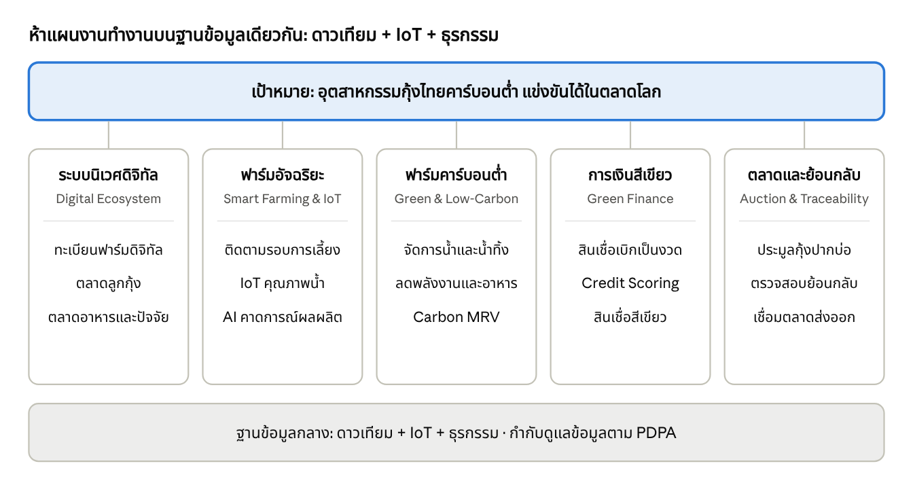

1. ข้อมูลโครงการโดยสรุป
AgroLink เสนอพัฒนาโครงสร้างพื้นฐานดิจิทัลกลางที่เชื่อมอุตสาหกรรมกุ้งไทยตั้งแต่โรงฟักถึงตลาดส่งออก เพื่อเพิ่มรายได้เกษตรกร ลดต้นทุน และนำอุตสาหกรรมสู่การผลิตคาร์บอนต่ำที่วัดผลได้จริง เอกสารนี้เป็น Concept Note ระดับแนวคิด ยังไม่รวมงบประมาณ ตัวเลขเป้าหมาย และรายละเอียดพื้นที่นำร่อง
| หัวข้อ | รายละเอียด |
|---|---|
| ชื่อโครงการ (ไทย) | โครงการพัฒนาระบบนิเวศเศรษฐกิจอุตสาหกรรมกุ้งไทยครบวงจร คาร์บอนต่ำและเป็นมิตรต่อสิ่งแวดล้อม ด้วยเทคโนโลยีดิจิทัล |
| ชื่อโครงการ (อังกฤษ) | AgroLink Green & Low-Carbon Smart Shrimp Ecosystem |
| หน่วยงานภาครัฐที่เสนอร่วม | กรมประมง กระทรวงเกษตรและสหกรณ์ |
| ผู้พัฒนาและดำเนินงานแพลตฟอร์ม | AgroLink Digital Agriculture Platform |
| พันธมิตรหลัก | ธ.ก.ส. และสถาบันการเงิน, ผู้ผลิตและผู้ให้บริการ IoT, มหาวิทยาลัยและผู้เชี่ยวชาญอิสระ |
| กลุ่มเป้าหมาย | เกษตรกรผู้เลี้ยงกุ้ง ฟาร์มเอกชน และผู้ประกอบการตลอดห่วงโซ่อุตสาหกรรมกุ้ง |
| เทคโนโลยีหลัก | ดาวเทียม, IoT, ปัญญาประดิษฐ์ (AI), การเงินดิจิทัล, ตลาดประมูลออนไลน์, ระบบตรวจสอบย้อนกลับ |
แนวคิดสำคัญ: “เชื่อมโยงธุรกิจกุ้งไทยตั้งแต่โรงฟักลูกกุ้งจนถึงตลาดส่งออกด้วยแพลตฟอร์มดิจิทัลเดียว เพิ่มการแข่งขันด้านราคารับซื้อ ลดต้นทุนและมลพิษ และยกระดับกุ้งไทยสู่มาตรฐานสีเขียวของตลาดโลก”
2. หลักการและเหตุผล
อุตสาหกรรมกุ้งเป็นหนึ่งในภาคธุรกิจเกษตรที่สำคัญต่อเศรษฐกิจไทย ตั้งแต่การเพาะเลี้ยง อาหารสัตว์น้ำ การแปรรูป จนถึงการส่งออก แต่ห่วงโซ่ยังมีปัญหาสี่ด้านที่ส่งผลต่อกัน และไม่มีระบบกลางที่แก้ได้พร้อมกัน
| ด้าน | ปัญหาสำคัญ |
|---|---|
| การผลิตและบริหารฟาร์ม | ต้นทุนอาหารและปัจจัยการผลิตสูง, คุณภาพลูกกุ้งไม่สม่ำเสมอ, ความเสี่ยงด้านคุณภาพน้ำและโรค, ขาดข้อมูลต้นทุนรายบ่อ |
| การตลาดและการจำหน่าย | เกษตรกรเข้าถึงผู้ซื้อจำกัด, ราคาปากบ่อต่างกันตามพื้นที่และช่วงเวลา, ไม่มีระบบเสนอราคาแข่งขันที่โปร่งใส, ขาดข้อมูลความต้องการของโรงงานและผู้ส่งออก |
| การเชื่อมโยงข้อมูลและการเงิน | ข้อมูลระหว่างฟาร์ม โรงฟัก โรงงานอาหาร แพกุ้ง ห้องเย็น และกรมประมงไม่เชื่อมโยงกัน, สถาบันการเงินขาดข้อมูลการผลิตจริง จึงพึ่งหลักประกันเป็นหลัก |
| สิ่งแวดล้อมและสภาพภูมิอากาศ | น้ำทิ้งที่มีสารอินทรีย์และธาตุอาหาร, การใช้พลังงานสูงจากเครื่องตีน้ำและปั๊ม, อาหารสูญเสีย, ตะกอนเลน, การใช้น้ำมาก, การบุกรุกพื้นที่อ่อนไหวชายฝั่ง และความเสี่ยงจากอุณหภูมิ น้ำท่วม และภัยแล้ง |
ปัญหาเหล่านี้มีรากเดียวกันคือ การขาดข้อมูลการผลิตที่เชื่อถือได้และต่อเนื่อง หากมีแพลตฟอร์มกลางที่เก็บข้อมูลชุดเดียวจากฟาร์มถึงตลาด ข้อมูลนั้นจะใช้ได้พร้อมกันทั้งเพิ่มประสิทธิภาพการผลิต สนับสนุนสินเชื่อ เปิดตลาดแข่งขัน และวัดผลด้านสิ่งแวดล้อมได้จริง
3. แนวคิดโครงการและวัตถุประสงค์
โครงการนี้ไม่ใช่เพียง “แพลตฟอร์มซื้อขายกุ้งออนไลน์” แต่เป็น การเปลี่ยนผ่านอุตสาหกรรมกุ้งไทยสู่การผลิตคาร์บอนต่ำและเป็นมิตรต่อสิ่งแวดล้อมด้วยเทคโนโลยีดิจิทัล โดยใช้ข้อมูล 3 แหล่งร่วมกัน คือ ดาวเทียม + IoT + ธุรกรรมการผลิตและการซื้อขาย เพื่อสร้างคุณค่าใน 4 ด้านพร้อมกัน ได้แก่ เศรษฐกิจ สิ่งแวดล้อม สภาพภูมิอากาศ และการเงิน
วงจรธุรกิจหลักที่แพลตฟอร์มรองรับ: ขึ้นทะเบียนฟาร์ม → ติดตามการเลี้ยง → สนับสนุนสินเชื่อเป็นงวด → ประมูลขายปากบ่อ → รับชำระเงิน → ปรับปรุงคะแนนความน่าเชื่อถือ → เริ่มรอบใหม่ โดยทุกขั้นตอนบันทึกข้อมูลสิ่งแวดล้อมควบคู่ไปด้วย
วัตถุประสงค์
พัฒนาแพลตฟอร์มดิจิทัลกลางที่เชื่อมโยงผู้เกี่ยวข้องตลอดห่วงโซ่อุตสาหกรรมกุ้ง
สร้างตลาดประมูลกุ้งปากบ่อออนไลน์ที่ผู้ซื้อหลายรายแข่งขันเสนอราคาอย่างโปร่งใส
ลดต้นทุนการผลิตด้วยระบบบริหารฟาร์ม IoT และการจัดซื้อปัจจัยการผลิตร่วมกัน
ลดมลพิษทางน้ำ การใช้พลังงาน และการปล่อยก๊าซเรือนกระจก พร้อมระบบตรวจวัด รายงาน และทวนสอบ (MRV)
เพิ่มความสามารถในการปรับตัวต่อความเสี่ยงจากสภาพภูมิอากาศของฟาร์ม
เพิ่มการเข้าถึงสินเชื่อการผลิตและสินเชื่อสีเขียว ด้วยข้อมูลการผลิตจริง
พัฒนาระบบตรวจสอบย้อนกลับจากโรงฟักถึงผู้ซื้อปลายทาง รองรับข้อกำหนดตลาดส่งออก พร้อมระบบตรวจและคัดเกรดคุณภาพกุ้งด้วย AI
สร้างฐานข้อมูลอุตสาหกรรมกุ้งเพื่อสนับสนุนการวางแผนของภาครัฐและเอกชน
4. องค์ประกอบหลัก: 5 แผนงาน
โครงการแบ่งเป็น 5 แผนงานที่ใช้ฐานข้อมูลกลางเดียวกัน ข้อมูลที่ฟาร์มบันทึกครั้งเดียวจึงใช้ได้ทั้งการบริหารฟาร์ม การรายงานสิ่งแวดล้อม การขอสินเชื่อ และการขาย

Digital Shrimp Ecosystem — ทะเบียนฟาร์มดิจิทัลพร้อมรหัสฟาร์มที่เชื่อมทุกระบบ, ตลาดกลางลูกพันธุ์กุ้ง และตลาดอาหารกุ้งและปัจจัยการผลิตที่รองรับการจัดซื้อรวม
Smart Farming & IoT — แพลตฟอร์มเปิดที่รองรับอุปกรณ์ IoT หลายผู้ผลิต (Open Integration) ติดตามรอบการเลี้ยงด้วยดาวเทียมและข้อมูลภาคพื้นดิน และใช้ AI ช่วยแจ้งเตือนคุณภาพน้ำ วิเคราะห์ FCR และคาดการณ์ผลผลิต
Green & Low-Carbon Farming — ระบบ Green Shrimp Management: จัดการน้ำและน้ำทิ้ง ลดพลังงานด้วยเครื่องตีน้ำอัจฉริยะและพลังงานแสงอาทิตย์ ลดอาหารสูญเสีย จัดการตะกอนเลนแบบเศรษฐกิจหมุนเวียน ระบบ Carbon MRV และระบบเตือนภัยสภาพภูมิอากาศ
Green Finance & Credit Scoring — สินเชื่อการผลิตแบบเบิกจ่ายตามกิจกรรมจริง คะแนนความน่าเชื่อถือของสมาชิกทุกฝ่าย (ฟาร์ม ผู้ซื้อ โรงฟัก ผู้ขายปัจจัย) และ Green Farm Performance Score สำหรับสินเชื่อสีเขียว
Online Auction & Traceability — ตลาดประมูลกุ้งปากบ่อที่เปรียบเทียบข้อเสนอด้วยราคาสุทธิ เงื่อนไขชำระเงิน และความน่าเชื่อถือของผู้ซื้อ, เชื่อมความต้องการของห้องเย็นและผู้ส่งออก และตรวจสอบย้อนกลับด้วย QR Code จากโรงฟักถึงผู้ซื้อปลายทาง
แนวทางเริ่มต้นที่เสนอคือ Auction-First: เปิดตลาดประมูลก่อนเพื่อดึงทั้งผู้ซื้อและผู้ขายเข้าระบบ แล้วต่อยอดสู่ข้อมูลการเลี้ยง การเงิน และสิ่งแวดล้อม
4.1 ระบบตรวจและคัดเกรดคุณภาพกุ้งด้วย AI (AI Shrimp Quality Grading)
ระบบนี้เชื่อมแผนงานที่ 2 กับแผนงานที่ 5 โดยตรง ผลตรวจคุณภาพก่อนจับและที่จุดรับซื้อถูกแนบไปกับประกาศประมูลและรหัสล็อตตรวจสอบย้อนกลับ ทำให้ผู้ซื้อเสนอราคาตามคุณภาพจริง และลดข้อพิพาทเรื่องการตัดเกรดหน้าบ่อ
| เทคโนโลยี | หลักการทำงาน | สิ่งที่ตรวจพบได้ |
|---|---|---|
| AI Computer Vision & Image Processing | กล้องความละเอียดสูงถ่ายภาพกุ้งบนสายพานหรือในถาด วิเคราะห์ด้วย Deep Learning ร่วมกับ Optical Sensor วัดการสะท้อนแสงบนเปลือก | เปลือกนิ่ม/เปลือกบาง, หางกุด หนวดขาด อวัยวะแหว่ง (ตรวจ Morphology ของแพนหาง Uropod/Telson หนวด และขา), ตะไคร่เกาะ คราบตะกอน และจุดดำ (Melanosis) ด้วย Color Segmentation |
| Texture Analyzer / Firmness Tester | หัวกดแรงต่ำกดบนเปลือกเพื่อวัดความแข็งและความยืดหยุ่น (Shell Hardness / Shell Integrity) | กุ้งเปลือกนิ่มหรือเพิ่งลอกคราบ ก่อนเข้ากระบวนการแช่แข็งหรือแปรรูป |
| NIRS / Hyperspectral Imaging | ยิงแสงอินฟราเรดย่านใกล้หรือถ่ายภาพหลายย่านความถี่ผ่านตัวกุ้ง โดยไม่ต้องเจาะหรือปอกเปลือก | ความสด ปริมาณน้ำ และองค์ประกอบเคมีในเนื้อ, เนื้อขุ่น (Muscle Necrosis) และเนื้อหลวม |
ลำดับการทำงานบนสายพานคัดเกรดอัตโนมัติ:
Camera & AI Vision System — ตรวจหางกุด หนวดขาด ตะไคร่เกาะ และจุดดำ
Light / Optical Sensor — ตรวจความมันวาวและโครงสร้างเปลือก (เปลือกนิ่ม)
Speed Diverter / Air Jet — คัดแยกกุ้งสมบูรณ์ออกจากกุ้งตกเกรดหรือมีตำหนิอัตโนมัติ
บันทึกผลเข้า AgroLink — สัดส่วนเกรดและตำหนิผูกกับรหัสฟาร์มและล็อต ใช้ประกอบการประมูล การตรวจสอบย้อนกลับ และการประเมินสุขภาพกุ้งของฟาร์ม
ประโยชน์: ลดแรงงานคัดเกรด คัดกุ้งมีตำหนิได้เร็วระดับหลายพันตัวต่อนาที ลดความเสี่ยงส่งออกกุ้งไม่ได้คุณภาพ และช่วยเกษตรกรประเมินสุขภาพกุ้งก่อนจับขาย ความแม่นยำของแต่ละเทคโนโลยีจะทดสอบกับกุ้งจริงในระยะนำร่อง
5. รูปแบบความร่วมมือ
โครงการใช้โมเดลความร่วมมือสามฝ่ายเป็นแกน คือ กรมประมง (มาตรฐานและข้อมูลภาครัฐ) ธ.ก.ส. (เงินทุน) และ AgroLink (โครงสร้างพื้นฐานดิจิทัล) โดยภาคเอกชนเป็นผู้ซื้อ ผู้ขาย และผู้ใช้บริการจริง
| หน่วยงาน | บทบาทที่เสนอ |
|---|---|
| กรมประมง | เชื่อมโยงทะเบียนฟาร์มและมาตรฐาน GAP, มาตรฐานการเพาะเลี้ยงและการจัดการสิ่งแวดล้อมฟาร์ม, องค์ความรู้ด้านสุขภาพสัตว์น้ำ, การตรวจสอบย้อนกลับเพื่อการส่งออก |
| ธ.ก.ส. และสถาบันการเงิน | พิจารณาสินเชื่อการผลิตแบบเบิกจ่ายเป็นงวดและสินเชื่อสีเขียว ใช้ข้อมูลการเลี้ยงประกอบการประเมินความเสี่ยง |
| AgroLink | พัฒนาและบริหารแพลตฟอร์ม, เชื่อมโยงดาวเทียมและ IoT, จัดตลาดประมูล, ระบบ MRV และคะแนนความน่าเชื่อถือ |
| ผู้ผลิตและผู้ให้บริการ IoT | อุปกรณ์ตรวจวัด การติดตั้ง สอบเทียบ และบำรุงรักษา (รวมถึงรูปแบบ IoT-as-a-Service) |
| โรงงานอาหารกุ้งและโรงงานห้องเย็น | ข้อมูลและแนวทางเพิ่มประสิทธิภาพอาหาร ความต้องการซื้อวัตถุดิบ และการตรวจสอบย้อนกลับ |
| มหาวิทยาลัยและผู้เชี่ยวชาญอิสระ | วิจัย ออกแบบระบบบำบัดน้ำ ประเมิน Carbon Footprint และทวนสอบผลลัพธ์ด้านสิ่งแวดล้อมอย่างอิสระ |
| เกษตรกรและผู้ประกอบการในห่วงโซ่ | ผู้ใช้งานจริง: ฟาร์ม โรงฟัก ผู้จำหน่ายปัจจัยการผลิต แพกุ้ง โรงงานแปรรูป และผู้ส่งออก |
บทบาทของหน่วยงานภาครัฐเป็นไปตามภารกิจ อำนาจหน้าที่ และข้อตกลงความร่วมมือที่ได้รับอนุมัติ
6. ผลลัพธ์ที่คาดหวังและผู้ได้รับประโยชน์
โครงการสร้างผลลัพธ์ 4 ด้านที่ตรวจวัดได้ ตัวชี้วัดและค่าเป้าหมายจะกำหนดหลังเก็บข้อมูลฐาน (Baseline) ในข้อเสนอฉบับเต็ม
| ด้าน | ผลลัพธ์ที่คาดหวัง | ตัวอย่างตัวชี้วัด |
|---|---|---|
| เศรษฐกิจ | ลดต้นทุน เพิ่มประสิทธิภาพการผลิต เพิ่มช่องทางตลาดผ่านการประมูล | ต้นทุนต่อ กก., FCR, จำนวนผู้ซื้อต่อประกาศขาย |
| สิ่งแวดล้อม | ลดภาระมลพิษในน้ำทิ้ง ลดอาหารสูญเสีย จัดการตะกอนอย่างเหมาะสม | น้ำใช้ต่อ กก. กุ้ง, ภาระมลพิษรวม BOD/COD/ไนโตรเจน/ฟอสฟอรัส, สัดส่วนน้ำที่นำกลับมาใช้ |
| สภาพภูมิอากาศ | ลดการใช้พลังงานและก๊าซเรือนกระจก เพิ่มความสามารถในการปรับตัว | kWh ต่อ กก. กุ้ง, kgCO₂e ต่อ กก. กุ้ง, ฟาร์มที่มีแผนรับมือความเสี่ยง |
| การเงิน | เกษตรกรเข้าถึงสินเชื่อการผลิตและการลงทุนเทคโนโลยีสีเขียวได้มากขึ้น | จำนวนฟาร์มที่ได้รับสินเชื่อผ่านระบบ, อัตราชำระคืนตามกำหนด |
ผู้ได้รับประโยชน์
เกษตรกรและฟาร์มเอกชน — เข้าถึงผู้ซื้อหลายราย เปรียบเทียบข้อเสนอได้ มีข้อมูลต้นทุน และใช้ประวัติธุรกรรมประกอบการขอสินเชื่อ
โรงฟักและผู้ผลิตอาหารกุ้ง — ช่องทางจำหน่าย B2B โดยตรง และวางแผนการผลิตตามความต้องการจริง
แพกุ้ง โรงงานแปรรูป และผู้ส่งออก — เห็นผลผลิตที่กำลังจะเข้าสู่ตลาดล่วงหน้า ตรวจสอบย้อนกลับและตอบข้อกำหนดด้านความยั่งยืนของตลาดต่างประเทศได้
สถาบันการเงิน — มีข้อมูลการผลิตจริงประกอบการพิจารณาและติดตามสินเชื่อมากกว่าหลักประกัน
กรมประมงและภาครัฐ — ได้ภาพรวมอุตสาหกรรมแบบใกล้เวลาจริง และข้อมูลผลลัพธ์ด้านสิ่งแวดล้อมที่ตรวจสอบได้สนับสนุนนโยบายเศรษฐกิจสีเขียวและสีน้ำเงิน
7. หลักการกำกับดูแลและขั้นตอนต่อไป
โครงการยึดหลักว่า AgroLink เป็นผู้ให้บริการเทคโนโลยีและเชื่อมโยงข้อมูล ไม่ใช่ผู้กำกับดูแลหรือผู้ปล่อยสินเชื่อ
หลักการสำคัญ
AgroLink ไม่ออกใบรับรองหรือใช้อำนาจแทนกรมประมง และการลงทะเบียนกับ AgroLink ไม่ถือเป็นการขึ้นทะเบียนกับกรมประมงโดยอัตโนมัติ
การอนุมัติ เบิกจ่าย และหักชำระสินเชื่อเป็นหน้าที่ของสถาบันการเงินที่ได้รับอนุญาต
ดาวเทียมและ IoT เป็นหลักฐานประกอบการตรวจสอบกิจกรรม ไม่ใช่หลักฐานยืนยันผลผลิตหรือความสามารถชำระหนี้โดยลำพัง
AI เป็นเครื่องมือช่วยตัดสินใจ ไม่ใช้วินิจฉัยโรคแทนผู้เชี่ยวชาญด้านสุขภาพสัตว์น้ำ และระบบควบคุมเครื่องตีน้ำต้องทำงานได้แม้อินเทอร์เน็ตขัดข้อง ผลคัดเกรดด้วย AI เป็นข้อมูลประกอบการซื้อขาย ไม่แทนผลตรวจความปลอดภัยอาหารและใบรับรองตามกฎหมาย
กำกับดูแลข้อมูลตาม PDPA: กำหนดสิทธิเจ้าของข้อมูล จัดการความยินยอม จำกัดสิทธิตามบทบาท (RBAC) และให้สมาชิกตรวจสอบ แก้ไข และโต้แย้งผลประเมินได้
คะแนนด้านสิ่งแวดล้อมแยกจากคะแนนเครดิตทางการเงิน และต้องตรวจสอบข้อกำหนดกฎหมายด้านข้อมูลเครดิตก่อนใช้จริง
การลดคาร์บอนไม่เท่ากับการออก Carbon Credit ได้ทันที จะศึกษาความเป็นไปได้ภายใต้ T-VER แยกต่างหาก และไม่นับเป็นรายได้หลักของโครงการ
ผลลัพธ์ด้านสิ่งแวดล้อมวัดเทียบกับข้อมูลฐาน และทวนสอบโดยมหาวิทยาลัยหรือผู้เชี่ยวชาญอิสระ
ขั้นตอนต่อไป
นำเสนอ Concept Note ต่อกรมประมงและ ธ.ก.ส. เพื่อรับฟังความเห็นและยืนยันบทบาท
ยืนยันหน่วยงานผู้ให้ทุน เพื่อปรับวัตถุประสงค์และตัวชี้วัดให้ตรงเกณฑ์
คัดเลือกพื้นที่นำร่องร่วมกับกรมประมงและผู้ประกอบการ
จัดทำข้อเสนอฉบับเต็ม: แผนนำร่อง ตัวชี้วัดเชิงตัวเลข งบประมาณ และกรอบการประเมินผล